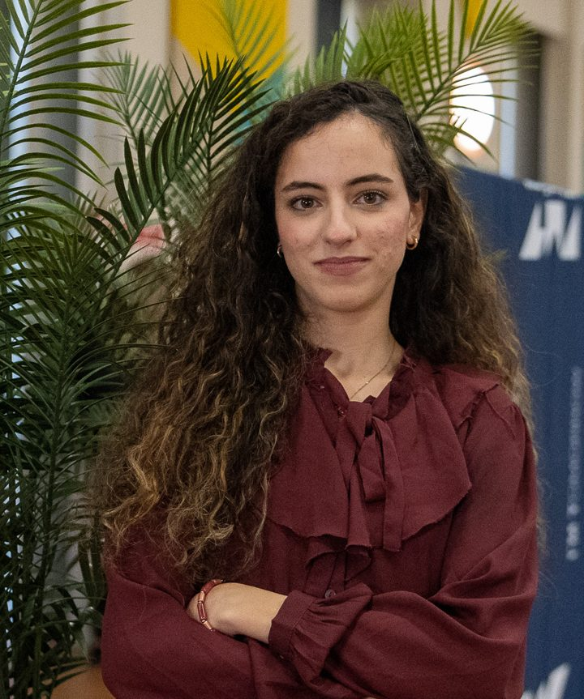

Infrastructure réseau sécurisée avec pfSense
Configuration d'un pare-feu open source, mise en place de règles de sécurité (NAT, filtrage de paquets), segmentation réseau, tests et validation.
pfSenseNATFiltrageSegmentation
Étudiante à IMT Nord Europe en programme d'intégration ingénieur en apprentissage (PIIA). Les réseaux mobiles, la 5G et ce qui vient ensuite me passionnent. Je cherche un stage en réseaux et télécommunications, puis une alternance pour mon cycle ingénieur.

J'aime découvrir de nouveaux sujets et comprendre comment les choses fonctionnent. Cette curiosité m'a menée vers les télécommunications, et plus précisément vers la 5G.
Chez Orange, en alternance, j'ai appris à travailler dans un environnement professionnel et j'ai mieux compris l'infrastructure télécom. Aujourd'hui, en PIIA, je consolide mes bases dans les matières fondamentales et, en parallèle, je développe mes compétences : machine learning, technologies 5G et 6G, programmation, gestion de bases de données.
Je suis aussi passionnée de voyages et de langues : j'apprends actuellement l'allemand et le turc.
J'ai changé de voie deux fois : un bac en sciences physiques, une année en commerce, puis les réseaux et télécommunications. À chaque fois, j'ai dû apprendre un nouveau domaine, de nouvelles méthodes et un nouvel environnement. J'ai gardé de ces changements une vraie capacité d'adaptation et le goût d'apprendre vite.
Mon parcours, dans l'ordre, du Maroc à Douai.
Lycée Polyvalent de Fès, option Français. Mention Très Bien.
Première année d'une formation générale en management et commerce. Membre active du club Rotaract et de The Great Debaters.
IUT de Poitiers, parcours Réseaux Opérateurs & Multimédia (ROM). Réseaux, sécurité, routage, téléphonie IP, systèmes et bases de données.
Programme d'intégration ingénieur en apprentissage. Je renforce mes bases fondamentales et je me forme au machine learning, à la 5G et à la 6G.
IMT Nord Europe, en alternance, après un stage de 10 semaines à partir de mi-avril 2027.
Des réseaux d'opérateurs à l'accès radio, j'ai travaillé la télécommunication côté études, côté terrain et côté déploiement.
Principes de l'interface radio et du réseau d'accès (MinesTelecom 5G). Je me forme à l'architecture 5G et aux évolutions vers la 6G.
Dimensionnement de liaisons fibres optiques, dans le cadre du BUT R&T.
VoIP et qualité de service (QoS). Déploiement d'une solution de téléphonie multi-sites.
Protocoles BGP et MPLS, parcours Réseaux Opérateurs & Multimédia, simulations sous GNS3.
Études de réaménagement et de raccordement réseau, suivi technique et économique des chantiers, mise à jour des bases de données d'infrastructure.
Analyse de trafic avec Wireshark et lecture des protocoles pour comprendre ce qui circule sur un réseau.
Je consolide mes fondamentaux et je me forme à ce que les entreprises recherchent aujourd'hui.
Configuration d'un pare-feu open source, mise en place de règles de sécurité (NAT, filtrage de paquets), segmentation réseau, tests et validation.
Déploiement d'une solution de téléphonie IP reliant plusieurs sites.
Widget SVG déployé sur Vercel, affiché sur mon profil GitHub.
Interface graphique PyQt qui met les personnes en relation selon la compatibilité de leurs emplois du temps iCalendar. SAÉ 3.02 du BUT R&T.
Je prépare un second site pour rassembler tous mes voyages au même endroit. Il sera relié à ce portfolio dès qu'il sera en ligne.
Je cherche un stage de 10 semaines à partir de mi-avril 2027 en réseaux et télécommunications. Écrivez-moi, je réponds avec plaisir.
salmaloukili999@gmail.com